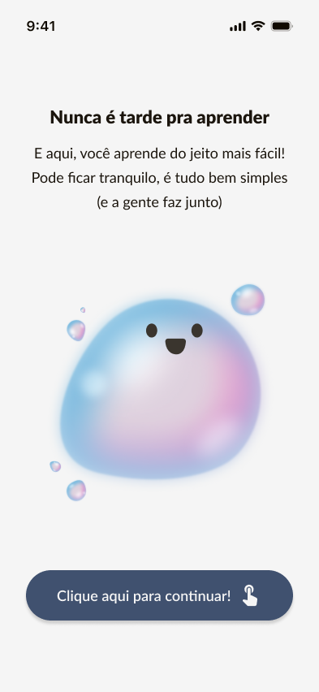
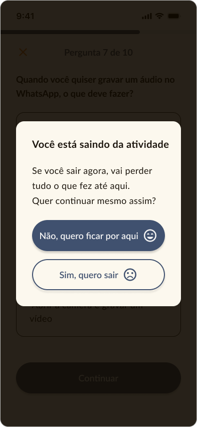
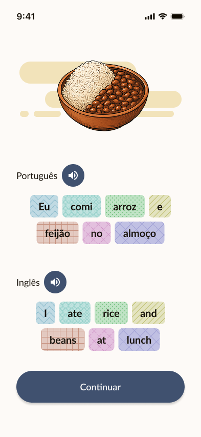
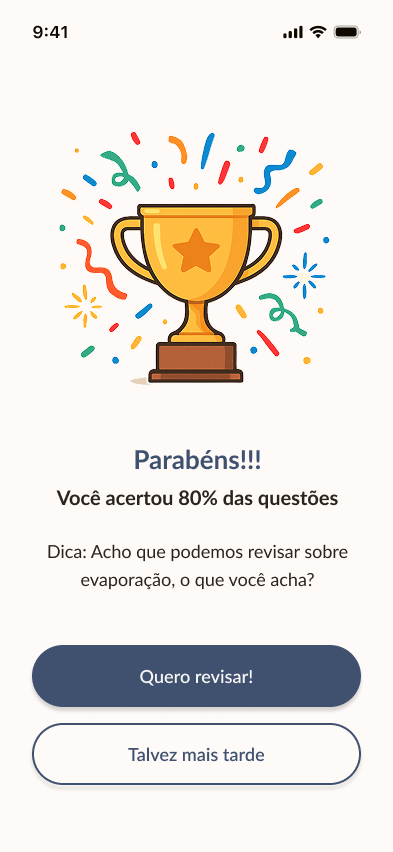
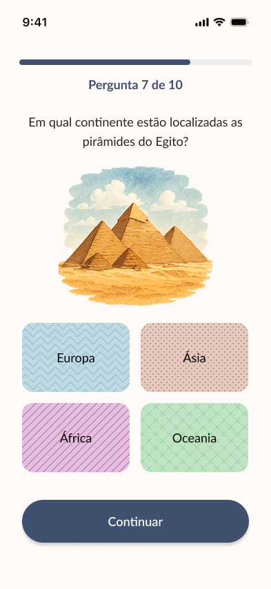
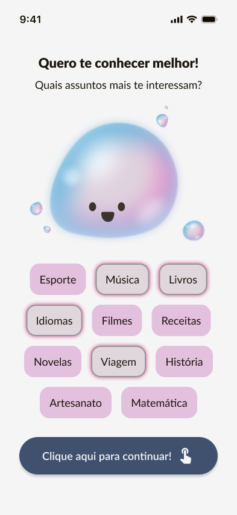
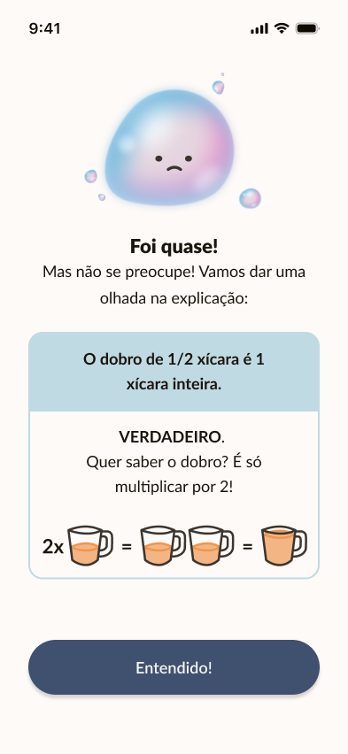
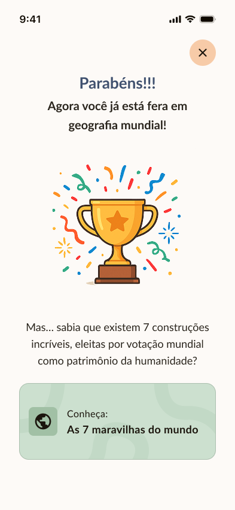
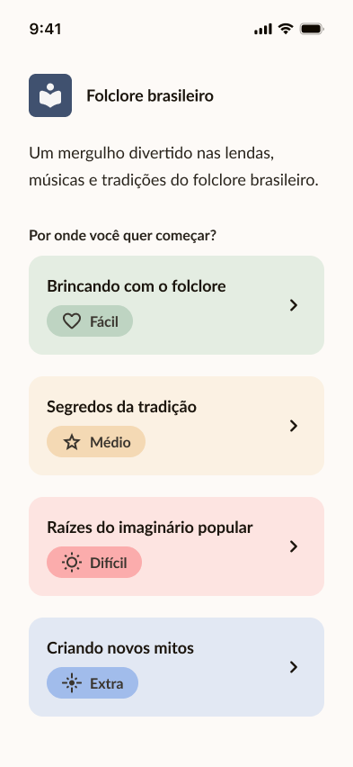
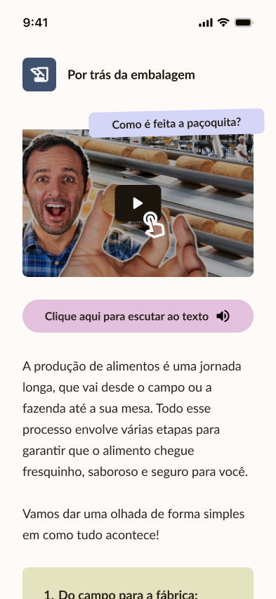

Heurísticas pedagógicas e de acessibilidade para aplicativos móveis para idosos
Exemplos
Heurísticas
Checklist

Clareza e concisão

Reforço e redundância estratégica

Progresso gradual e confortável

Compreensão e adaptação ao usuário

Visibilidade do progresso

Adaptação e personalização

Feedback claro e motivador

Aprofundamento e exploração

Desafios adaptativos

Apoio ao desenvolvimento linguístico
A interface deve apresentar informações de forma clara e compreensível, evitando sobrecarga cognitiva. O
conteúdo deve ser direto e relevante para a tarefa do usuário.
A interface deve reforçar informações essenciais de maneira acessível, utilizando múltiplos formatos e
oferecendo opções de apresentação. O reforço deve ser feito de forma estratégica para facilitar o
aprendizado sem sobrecarregar o usuário.
A interface deve permitir que os usuários avancem no conteúdo de maneira progressiva, garantindo uma
experiência confortável e reduzindo barreiras cognitivas e emocionais. A apresentação deve ser contextual
e relevante para o usuário.
A interface deve fornecer feedback contínuo e adaptar-se às necessidades do usuário, garantindo que a
experiência seja personalizada e relevante para seu nível de conhecimento e progresso.
A interface deve fornecer informações claras e contínuas sobre o avanço do usuário, garantindo que ele
compreenda seu progresso e se sinta motivado a continuar.
A interface deve se ajustar às características individuais do usuário, proporcionando uma experiência
inclusiva e relevante com base em suas necessidades, preferências e limitações.
A interface deve fornecer feedback contínuo e construtivo, destacando conquistas e sugerindo melhorias de
forma clara e motivadora, sem causar frustração ao usuário.
A interface deve permitir que o usuário aprofunde seu conhecimento por meio de conteúdos e atividades
complementares, proporcionando oportunidades de revisão e prática conforme suas necessidades.
A interface deve oferecer desafios ajustáveis ao nível de habilidade do usuário, permitindo que ele
escolha atividades com base em suas habilidades e progresso.
A interface deve oferecer atividades que incentivem o desenvolvimento das habilidades de leitura, escrita
e interpretação, promovendo a compreensão e a produção de linguagem escrita de forma acessível e gradual.